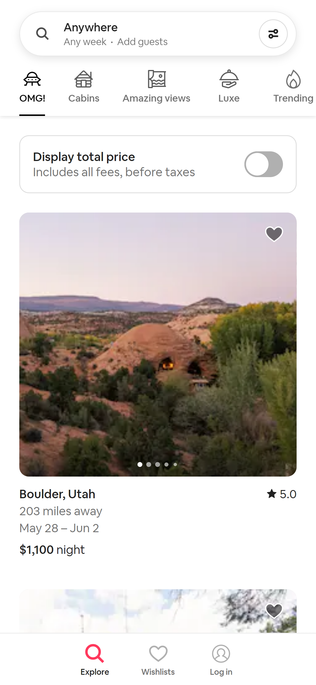
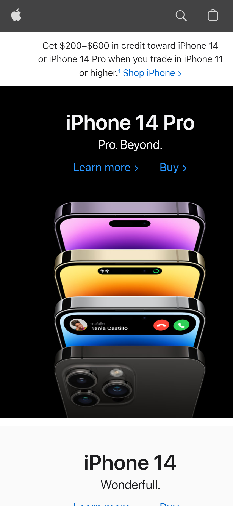

Fitt's Law
AirBnB Fitt's Law
The inportance of size and Distance. I feel AirBnB has used the size and location of the search field being right at the top of the page to make it easier and faster to search for a property. Than the images of the property are right below the search field so you can see what you are looking for.
Rule of thirds
Breitling Mens WatchesThe Rule of Thirds
I feel that Breitling watches use the rule of thirds well in there images. You can see in these two images that you have the watches placed in thirds on the images. They also have some of the option in thirds on the page. This help the flow of the image and keeps nice neat lines.
Contrast
Apple.com Contrast
The way that Apple used contrast to make each of the phone look like they are bold and new. The black background help the bold colors just jump off the screen and gives you a good idea that each frame on the Iphone has a different color. The use of black and white help lead the eye to each section.